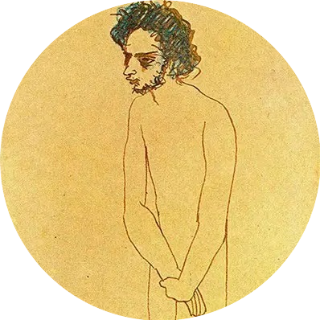

Offene Software
In einer offenen Software-Suite für den Browser wollen wir EKG, Atemmessung und Biofeedback zusammenbringen. Ein Smartphone und der Polar-H10-Brustgurt sollen die Signale liefern.
Projekt auf GitHub ansehenOffene Biosensorik für Gesundheit und kreative Medien zur Stressregulation.
In einer offenen Software-Suite für den Browser wollen wir EKG, Atemmessung und Biofeedback zusammenbringen. Ein Smartphone und der Polar-H10-Brustgurt sollen die Signale liefern.
Projekt auf GitHub ansehenPulsraum soll Gesundheitsdaten auf dem eigenen Gerät verarbeiten und speichern. Die offene Software soll dabei ohne Anbieterbindung oder Weitergabe der Daten auskommen.
Atembewegung per Smartphone
Simuliert · 15 Atemzüge/min
Herzsignal vom Polar H10
Simuliert · 72 Schläge/min
Bei einer Atemübung könnte eine Form auf dem Bildschirm mit deinem Atem wachsen und schrumpfen. In einem Spiel könnte jeder Herzschlag eine Figur bewegen.
Pulsraum baut auf vorhandener Hardware, Software und Forschung auf. Zusammen sollen sie den Weg von der Signalerfassung bis zum Biofeedback im Browser abdecken.
Der EKG-Brustgurt Polar H10 liefert das Herzsignal. Die Vorarbeit Polar Stream erfasst EKG-Rohdaten für die Weiterverarbeitung.
Polar Stream auf GitHubEin am Bauch getragenes Smartphone soll Atembewegungen erfassen. Ein Forschungsbeispiel für den Einsatz von Smartphone-Sensoren ist SleepAp, das Bewegungsdaten und Tonaufnahmen für das Schlafapnoe-Screening nutzte.
SleepAp · Behar et al. (2015)Herz- und Atemsignale sollen Spiele und Visualisierungen steuern. EC Gaming erprobt diesen Ansatz mit Browserspielen, die auf den Herzschlag reagieren.
EC Gaming auf GitHubDie Bluetooth-Anbindung verbindet den EKG-Brustgurt Polar H10 mit dem Browser und stellt EKG- und Herzfrequenzdaten für Web-Apps bereit.
Die Browseranwendung liest den Beschleunigungssensor des Smartphones aus, um Atembewegungen zu erfassen.
Wir wollen die vom Smartphone erfassten Atembewegungen mit parallel aufgezeichneten Beschleunigungsdaten des Polar H10 vergleichen. Der bereits vorhandene Go Direct Spirometer von Vernier liefert Vergleichswerte für Atemfluss und Atemvolumen.
Blender-Modell des Spirometers herunterladenDu sollst deine Messdaten auf dem Smartphone auswerten oder ohne Cloud direkt an deinen Heim-PC senden können. Die Anwendung soll aus dem EKG deinen Puls und aus der Atemkurve deine Atemfrequenz berechnen. So könntest du verfolgen, wie sich beide Werte im Laufe der Zeit verändern. Wir planen die Open-Source-Anwendung als Browserversion, als installierbare Progressive Web App (PWA) und als App für Android und iPhone.
Wir wollen eine komfortable, leicht anzulegende Smartphone-Halterung entwickeln, die das Gerät über Nacht in einer stabilen Position hält. Für die Auswertung von Schlafdaten zu Hause wollen wir die Messprotokolle für Atmung und Herzfrequenz mit parallelen Messungen eines medizinischen kardiorespiratorischen Referenzgeräts vergleichen und ihre Eignung für die Schlafdiagnostik untersuchen.

M.Sc. Kognitive Neuropsychologie
Verbindet bei Pulsraum seine Forschung zu Atmung und Körperwahrnehmung mit physiologischer Signalverarbeitung und interaktiven Anwendungen.
Vorarbeiten zu Biosensorik und interaktivem Feedback: Polar Stream und EC Gaming.
Entwickler bei Zen Specs
Arbeitet als Projektpartner an der Ausrichtung von Pulsraum und verbindet Biosensorik, selbstbestimmte Datennutzung und kreative Anwendungen.
Zen Specs